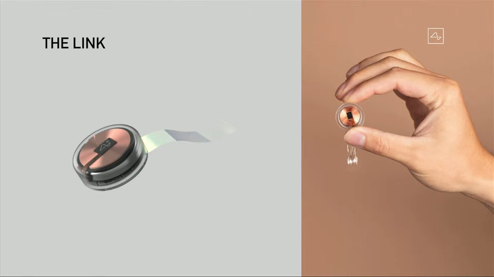
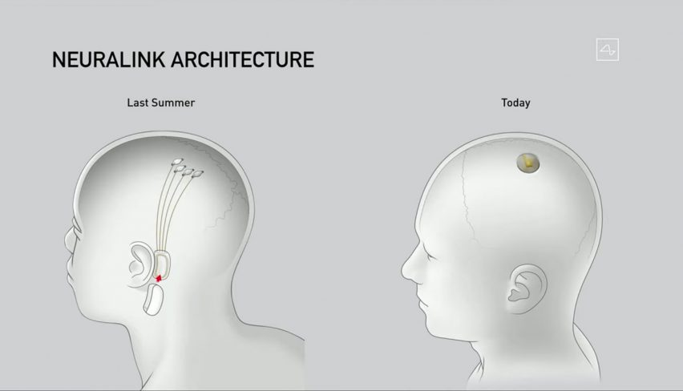
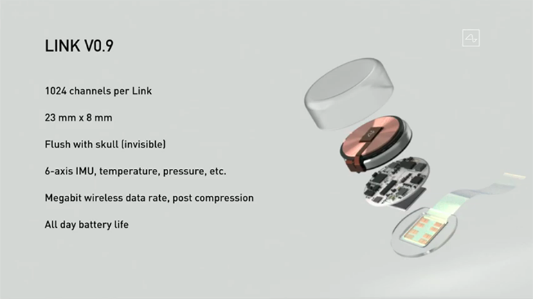

As the name suggest NEURALINK
has to do some thing with brain and neurons. But for a brief
here is what neuralink is all about.
Elon Musk wants to control machines with just the power of thought. To that end, in July 2019 Musk and
his team revealed that they had developed ultrafine threads
that can be woven into your brain to
listen in on your neurons. The company has also built a robot that can perform the delicate surgery,
under the supervision of a neurosurgeon.
When the company was first launched in 2016, Musk said he wanted to help humans compete in a world
where artificial intelligence had surpassed them – to give us more ‘bandwidth’. But with this new
announcement the researchers have turned their attention to helping those with brain-related disorders.
After reading that you might have some questions like :-
- How does it work
- What kind of conditions can be treated by neuralink
- Do we need to place it inside our brain
- Risks associated with neuralink
- And also when can humanity use it
Don’t worry I would be answering all those questions. So chill and read the whole article.
How does Neuralink work?
The N1, a 4mm-square chip, is implanted into the skull. Attached to the chip are wires thinner than a
human hair, which reach out into the brain. These threads are placed close to important parts of the
brain and are able to detect messages as they are relayed between neurons, recording each impulse and
stimulating their own. Neuralink says the N1 is able to connect with 1,000 different brain cells, and
that a patient might have as many as 10 N1 chips implanted.
The chips connect wirelessly to a wearable device that hooks over the user’s ear, much like a hearing
aid, and contains a Bluetooth radio and a battery.
Neuralink says the first devices will be implanted via traditional neurosurgery, but eventually the
chips will be inserted safely and virtually painlessly through small incisions by a robot surgeon.
What kind of conditions could be treated using NEURALINK technology?
The technology could help with neurological disorders, which are rooted in the inability of the brain to
connect with nerves around the body. These include epilepsy and Parkinson’s disease, but also paraplegia
and quadriplegia following injuries to spinal nerves.
Does NEURALINK have to be stuck inside my brain?
Unfortunately, the technology needs to be close to each nerve in order to pick up signals – anything
further than 60 microns wouldn’t be able to detect individual impulses (1 micron = 0.001mm).
Real image of Prototype provided by NEURALINK

Virtual representation of the NEURALINK inside the brain

Risk associated with NEURALINK?
Neuralink will need to learn from the successes (and failures) of existing brain-computer interface
technologies. The threads connecting electrodes to the chip need to be flexible, to minimise the damage
to surrounding brain tissue. And if this technology is to be given to patients with pre-existing
conditions, there are also risks associated with operating on those whose immune systems may be
compromised.
Musk reassured the audience that implanting the device would be as safe as having laser eye surgery,
but the company is yet to seek FDA approval, which it will need to market the device.
There aren’t just health risks, either: society will need to consider what to do with the data recorded
by the N1. What are the ethics behind monitoring someone’s every thought, deed and emotion?
When can humanity use it?
Musk hopes for human studies to begin as early as 2020, a date some say is wildly optimistic. At the
launch, Neuralink’s CEO Max Hodak stated that the first patients would be those with quadriplegia due to
spinal cord injuries. These patients will have four chips implanted, connecting with up to 4,000
different neurons.
The benefits extend beyond the disabled. Musk hopes that the technology will become commonplace, turning
the humans into cyborg beings that can achieve a symbiosis with artificial intelligence – something he
believes will be essential to the survival of our species.
Here is the technical parts used inside the chip

Neuralink’s implant contains all the necessary components, including a battery, processing chip, and
bluetooth radio, along with about a thousand electrode contacts, all on board the device. Each electrode
records the activity of somewhere between zero and four neurons in the brain. A thousand of them in a
living animal would be the highest number the BCI field has seen from a self-contained implant.